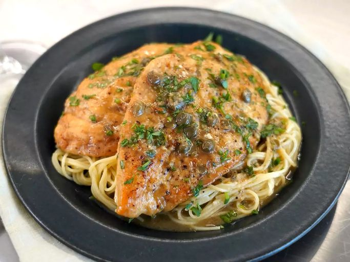

Chicken Piccata with Artichoke Hearts

After eating chicken piccata in many restaurants and finding many that were 'greasy', I came up with this recipe through much trial and error. It has wonderful flavor and is even better the next day! I like to serve it over angel hair pasta or linguine.
Ingredients
- 3/4 cup all-purpose flour
- 1/8 teaspoon garlic powder
- 1/4 teaspoon salt
- 1/8 teaspoon black pepper
- 1/2 teaspoon Italian seasoning
- 4 skinless, boneless chicken breast halves, pounded 1/2 inch thick and cut into thirds
- 2 tablespoons olive oil
- 1 clove garlic, minced
- 1 Onion, minced
- 1/2 cup white wine
- 1 (14.5) can chicken broth
- 2 tablespoons lemon juice
- 1 (13.75 ounce) can artichoke hearts, drained and chopped, liquid reserved
- 2 tablespoons butter
Directions
- Mix together the flour, garlic powder, salt, pepper, and Italian seasoning on a plate. One by one, dredge the chicken pieces lightly in the prepared flour mixture.
- Heat the olive oil in a large skillet over medium-high heat. Cook the chicken pieces for 2 minutes per side, or until nicely browned. Remove from the skillet and set aside.
- Using the same skillet, cook and stir the garlic and onion until translucent, about 5 minutes. Pour the white wine into the skillet, turn the heat to high, and cook until the wine reduces by half, 4 to 5 minutes. Add the chicken broth, lemon juice, artichoke hearts, reserved arthoke liquid, and browned chicken to the skillet. Reduce the heat to medium and cook until the sauce thickens, about 20 minutes. Stir in the capers and butter.
back